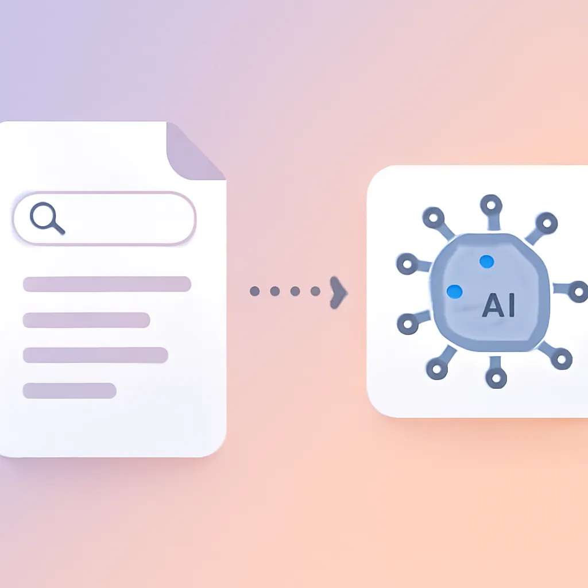
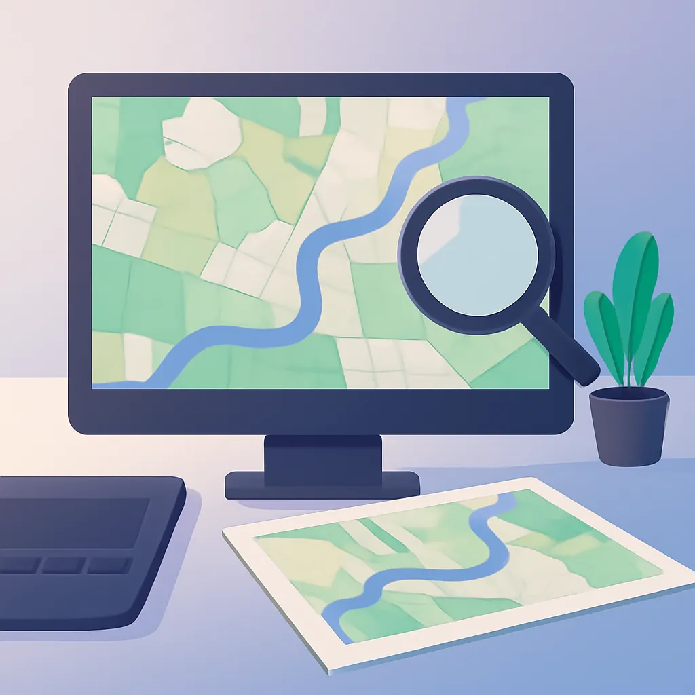

대표 글Featured · 데이터분석
데이터 시각화 차트, 언제 무엇을 써야 할까
데이터 시각화를 위한 차트 선택 가이드를 제시합니다. 막대, 선, 파이 차트 등의 사용법과 주의점을 알아보세요.
기술과 데이터로 공공의 일상을 잇는 기록.Notes on tech and data for the public sector.
데이터 시각화를 위한 차트 선택 가이드를 제시합니다. 막대, 선, 파이 차트 등의 사용법과 주의점을 알아보세요.
울주군, 2026년 상반기 적극행정 우수공무원 5명 상장 연합뉴스 📰 원문 보기: 울주군, 2026년 상반기 적극행정 우수공무원 5명 상장 - 연합뉴스
김포시, 공공빅데이터 활용해 벼 병해충 항공방제 지도 제작.... 공간정보(GIS) 기반 항공방제 지도 제작으로 효율적 방제 지원 새한일보 📰 원문 보기: 김포시, 공공빅데이터 활용해 벼 병해충 항공방제 지도 제작.... 공간정보(GIS) 기반 항공방…

인공지능RAG(검색증강생성)는 AI와 문서 검색을 결합하여 사용자가 쉽고 빠르게 정보를 찾도록 돕는 기술입니다.

GISQGIS를 활용한 무료 GIS 첫걸음을 시작해 보세요. 설치부터 데이터 시각화까지의 기본 과정을 안내합니다.
피싱 메일의 특징과 구별 방법을 알아보세요. 발신자, 링크, 첨부파일 등을 점검해 보안을 강화하세요.
엑셀로 손쉽게 데이터 분석을 시작하세요. 기초 정리부터 피벗 테이블, 함수 활용까지 알아보세요.
 인공지능
인공지능
공공기관이 AI를 도입할 때 반드시 고려해야 할 문제 정의, 데이터 품질, 도구 선택, 그리고 비용 요소를 탐구합니다.
 GIS
GIS
좌표계와 투영은 GIS에서 지구 데이터를 화면에 정확히 표현하기 위한 핵심 요소입니다.
 보안
보안
비밀번호와 2단계 인증을 활용한 보안 강화의 중요성과 실천 방법을 알아봅니다.